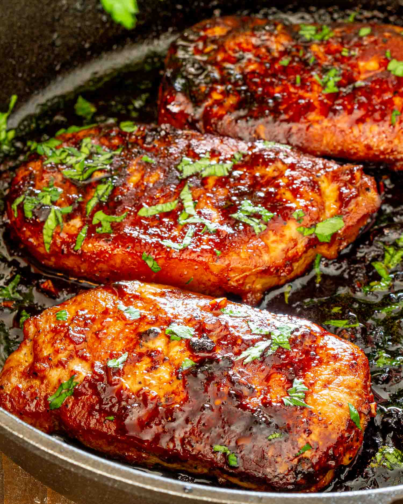

Spicy Pork Chops

Ingredients
- Pork Chops
- Gochujung, Honey, Mirin, Soy, Sesame Seed Oil, Brown Sugar
- Ginger
- Garlic
- Green Onion
Directions
- Pat pork chops dry and set aside
- Mix table spoon of gochujung, honey, mirin, soy half table spoon of brown sugar in bowl.
Once mixed shave ginger into bowl along with quarter tablespoon of garlic. Mix well.
- Coat pork chops in newly created sauce mix generously
- Cook pork chops over medium heat until cooked to 160 degrees internal temp
- Garnish with green onion